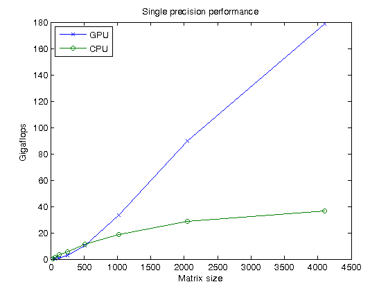
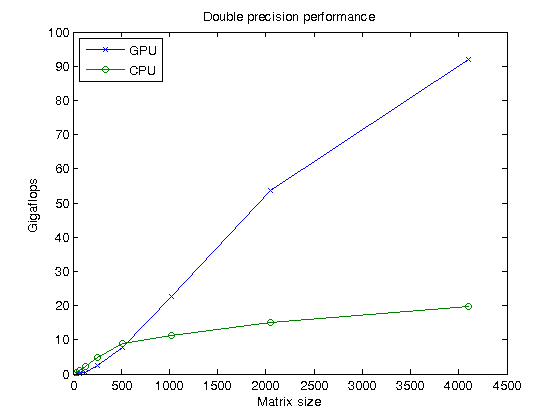
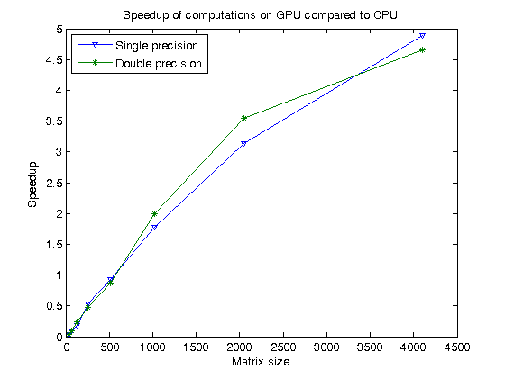

Benchmarking A\b on the GPU
This demo looks at how we can benchmark the solving of a linear system on the GPU. The MATLAB® code to solve for x in A*x = b is very simple. Most frequently, we use matrix left division, also known as mldivide or the backslash operator (\), to calculate x, i.e., x = A\b.
Related demos:
- Benchmarking A\b using distributed arrays.
Contents
The code shown in this demo can be found in this function:
function results = paralleldemo_gpu_backslash(maxMemory)
As discussed in the section "Choose Problem Size" below, it is important to choose the appropriate matrix size for the computations. We can do this by specifying the amount of system memory in GB available to the CPU and the GPU. The default value is conservative, so you should specify a value that is appropriate for your system.
if nargin == 0 maxMemory = 0.125; % In GB warning('distcomp:GPUBackslashDemo:UsingDefaultMemory', ... ['Amount of system memory available for arrays is ', ... 'not specified. Using the conservative default value ', ... 'of %.2f gigabytes.'], maxMemory); end
The Benchmarking Function
We want to benchmark matrix left division (\), and not the cost of transferring data between the CPU and GPU, the time it takes to create a matrix, etc. We therefore separate the data generation from the solving of the linear system, and measure only the time it takes to do the latter.
function [A, b] = getData(n, clz) fprintf('Creating a matrix of size %d-by-%d.\n', n, n); A = rand(n, n, clz) + 100*eye(n, n, clz); b = rand(n, 1, clz); end function time = timeSolve(A, b) tic; x = A\b; time = toc; end
Choose Problem Size
As with a great number of other parallel algorithms, the performance of solving a linear system in parallel depends greatly on the matrix size. As seen in other demos, such as Benchmarking A\b, we compare the performance of the algorithm for different matrix sizes.
% Declare the matrix sizes to be powers of 2, starting at 2^5.
maxPow2 = floor(log2(sqrt(maxMemory*1024^3/8)));
matSize = 2.^(5:maxPow2);
Comparing Performance: Gigaflops
We use the number of floating point operations per second as our measure of performance because that allows us to compare the performance of the algorithm for different matrix sizes.
Given a matrix size, the benchmarking function creates the matrix A and the right-hand side b once, and then solves A\b a few times to get an accurate measure of the time it takes. We use the floating point operations count of the HPC Challenge, so that for an n-by-n matrix, we count the floating point operations as 2/3*n^3 + 3/2*n^2.
function gflops = benchFcn(A, b) numReps = 3; time = inf; % We solve the linear system a few times and calculate the Gigaflops % based on the best time. for itr = 1:numReps tcurr = timeSolve(A, b); time = min(tcurr, time); end n = size(A, 1); flop = 2/3*n^3 + 3/2*n^2; gflops = flop/time/1e9; end
Execute the Benchmarks
Having done all the setup, it is straightforward to execute the benchmarks. However, the computations can take a long time to complete, so we print some intermediate status information as we complete the benchmarking for each matrix size. We also encapsulate the loop over all the matrix sizes in a function, as we want to benchmark both single and double precision computations.
function [gflopsCPU, gflopsGPU] = executeBenchmarks(clz) fprintf(['Starting benchmarks with %d different matrix sizes ' ... 'ranging\nfrom %d-by-%d to %d-by-%d.\n'], ... length(matSize), matSize(1), matSize(1), matSize(end), ... matSize(end)); gflopsGPU = zeros(size(matSize)); gflopsCPU = zeros(size(matSize)); for i = 1:length(matSize) n = matSize(i); [A, b] = getData(n, clz); gflopsCPU(i) = benchFcn(A, b); fprintf('Gigaflops on CPU: %f\n', gflopsCPU(i)); A = gpuArray(A); b = gpuArray(b); gflopsGPU(i) = benchFcn(A, b); fprintf('Gigaflops on GPU: %f\n', gflopsGPU(i)); end end
We then execute the benchmarks in single and double precision.
results.matSize = matSize; [cpu, gpu] = executeBenchmarks('single'); results.gflopsSingleCPU = cpu; results.gflopsSingleGPU = gpu; [cpu, gpu] = executeBenchmarks('double'); results.gflopsDoubleCPU = cpu; results.gflopsDoubleGPU = gpu;
Starting benchmarks with 8 different matrix sizes ranging from 32-by-32 to 4096-by-4096. Creating a matrix of size 32-by-32. Gigaflops on CPU: 0.403126 Gigaflops on GPU: 0.014568 Creating a matrix of size 64-by-64. Gigaflops on CPU: 1.174719 Gigaflops on GPU: 0.106166 Creating a matrix of size 128-by-128. Gigaflops on CPU: 3.233358 Gigaflops on GPU: 0.611378 Creating a matrix of size 256-by-256. Gigaflops on CPU: 5.406380 Gigaflops on GPU: 2.873947 Creating a matrix of size 512-by-512. Gigaflops on CPU: 11.146186 Gigaflops on GPU: 10.419907 Creating a matrix of size 1024-by-1024. Gigaflops on CPU: 18.840295 Gigaflops on GPU: 33.503047 Creating a matrix of size 2048-by-2048. Gigaflops on CPU: 28.589810 Gigaflops on GPU: 89.634211 Creating a matrix of size 4096-by-4096. Gigaflops on CPU: 36.587832 Gigaflops on GPU: 178.686037 Starting benchmarks with 8 different matrix sizes ranging from 32-by-32 to 4096-by-4096. Creating a matrix of size 32-by-32. Gigaflops on CPU: 0.359713 Gigaflops on GPU: 0.014496 Creating a matrix of size 64-by-64. Gigaflops on CPU: 1.045703 Gigaflops on GPU: 0.102905 Creating a matrix of size 128-by-128. Gigaflops on CPU: 2.305798 Gigaflops on GPU: 0.556821 Creating a matrix of size 256-by-256. Gigaflops on CPU: 4.944397 Gigaflops on GPU: 2.352609 Creating a matrix of size 512-by-512. Gigaflops on CPU: 9.035056 Gigaflops on GPU: 7.880717 Creating a matrix of size 1024-by-1024. Gigaflops on CPU: 11.314042 Gigaflops on GPU: 22.525771 Creating a matrix of size 2048-by-2048. Gigaflops on CPU: 15.165478 Gigaflops on GPU: 53.739356 Creating a matrix of size 4096-by-4096. Gigaflops on CPU: 19.740117 Gigaflops on GPU: 91.940907
Plot the Performance
We can now plot the results, and compare the performance on the CPU and the GPU, both for single and double precision.
First, we look at the performance of the backslash operator in single precision.
fig = figure; ax = axes('parent', fig); plot(ax, results.matSize, results.gflopsSingleGPU, '-x', ... results.matSize, results.gflopsSingleCPU, '-o') legend('GPU', 'CPU', 'Location', 'NorthWest'); title(ax, 'Single precision performance') ylabel(ax, 'Gigaflops'); xlabel(ax, 'Matrix size'); drawnow;
Now, we look at the performance of the backslash operator in double precision.
fig = figure; ax = axes('parent', fig); plot(ax, results.matSize, results.gflopsDoubleGPU, '-x', ... results.matSize, results.gflopsDoubleCPU, '-o') legend('GPU', 'CPU', 'Location', 'NorthWest'); title(ax, 'Double precision performance') ylabel(ax, 'Gigaflops'); xlabel(ax, 'Matrix size'); drawnow;
Finally, we look at the speedup of the backslash operator when comparing the GPU to the CPU.
speedupDouble = results.gflopsDoubleGPU./results.gflopsDoubleCPU; speedupSingle = results.gflopsSingleGPU./results.gflopsSingleCPU; fig = figure; ax = axes('parent', fig); plot(ax, results.matSize, speedupSingle, '-v', ... results.matSize, speedupDouble, '-*') legend('Single precision', 'Double precision', 'Location', 'NorthWest'); title(ax, 'Speedup of computations on GPU compared to CPU'); ylabel(ax, 'Speedup'); xlabel(ax, 'Matrix size'); drawnow;
end
ans =
matSize: [32 64 128 256 512 1024 2048 4096]
gflopsSingleCPU: [1x8 double]
gflopsSingleGPU: [1x8 double]
gflopsDoubleCPU: [1x8 double]
gflopsDoubleGPU: [1x8 double]